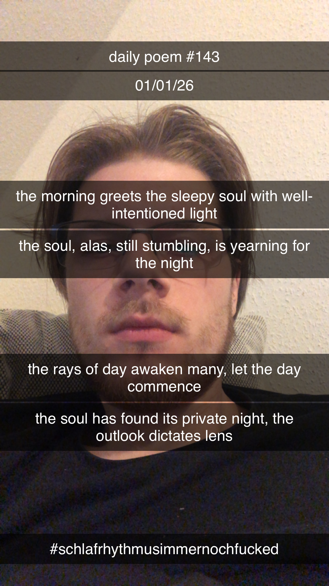

The Morning Greets the Sleepy Soul
[143]The morning greets the sleepy soul with well-intentioned light
The soul, alas, still stumbling, is yearning for the night
The rays of day awaken many, let the day commence
The soul has found its private night, the outlook dictates lens
